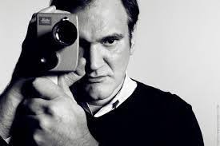

is an American director, writer, and actor.
His films are characterized by nonlinear storylines; satirical subject matter; an aestheticization of violence; extended scenes of dialogue; ensemble casts consisting of established and lesser-known performers; references to popular culture and a wide variety of other films; soundtracks primarily containing songs and score pieces from the 1960s to the 1980s; and features of neo-noir film.
His career began in the late 1980s when he wrote and directed My Best Friend's Birthday, the screenplay of which later formed the basis for True Romance. In the early 1990s, he began his career as an independent filmmaker with the release of Reservoir Dogs in 1992, which was funded by money from the sale of his script Natural Born Killers to Oliver Stone. Empire deemed the Reservoir Dogs the "Greatest Independent Film of All Time". Its popularity was boosted by his second film, Pulp Fiction (1994), a black comedy crime film that was a major success both among critics and audiences. Judged the greatest film from 1983–2008 by Entertainment Weekly, many critics and scholars have named it one of the most significant works of modern cinema. For his next effort, Tarantino paid homage to the blaxploitation films of the 1970s with Jackie Brown (1997), an adaptation of the novel Rum Punch.
Kill Bill, a highly stylized "revenge flick" in the cinematic traditions of Kung fu films, Japanese martial arts, Spaghetti Westerns and Italian horror, followed six years later, and was released as two films: Volume 1 in 2003 and Volume 2 in 2004. Tarantino next directed Death Proof in 2007, as part of a double feature with friend Robert Rodriguez, under the collective title Grindhouse. His long-postponed Inglourious Basterds, which tells the fictional alternate history story of two plots to assassinate Nazi Germany's political leadership, was released in 2009 to positive reviews. After that came 2012's critically acclaimed Django Unchained, a Western film set in the antebellum era of the Deep South. It became the highest-grossing film of his career thus far, making over $425 million at the box office. His eighth film, the mystery-Western The Hateful Eight, was released in its roadshow version December 25, 2015, in 70 mm film format, complete with opening "overture" and halfway-point intermission, after the fashion of big-budget films of the 1960s and early 1970s.
Tarantino's films have garnered both critical and commercial success. He has received many industry awards, including two Academy Awards, two Golden Globe Awards, two BAFTA Awards and the Palme d'Or, and has been nominated for an Emmy and a Grammy. In 2005, he was included on the annual Time 100 list of the most influential people in the world.Filmmaker and historian Peter Bogdanovich has called him "the single most influential director of his generation".
In December 2015, Tarantino received a star on the Hollywood Walk of Fame for his contributions to the film industry. Tarantino was born on March 27, 1963, in Knoxville, Tennessee, the only child of Connie McHugh and Tony Tarantino. His father is of Italian descent, and his mother has Cherokee and Irish ancestry. Quentin was named for Quint Asper, Burt Reynolds' character in the CBS series Gunsmoke. Tarantino's mother met his father during a trip to Los Angeles, where Tony was a law student and would-be entertainer. She married him soon after, to gain independence from her parents, but their marriage was brief. After the divorce, Connie Tarantino left Los Angeles and moved to Knoxville, where her parents lived. In 1966, Tarantino and his mother moved back to Los Angeles.
Tarantino's mother married musician Curtis Zastoupil soon after arriving in Los Angeles, and the family moved to Torrance, a city in Los Angeles County's South Bay area. Zastoupil encouraged Tarantino's love of movies, and accompanied him to numerous film screenings. Tarantino's mother allowed him to see movies with adult content, such as Carnal Knowledge (1971) and Deliverance (1972). After his mother divorced Zastoupil in 1973, and received a misdiagnosis of Hodgkin's lymphoma,[citation needed] Tarantino was sent to live with his grandparents in Tennessee. He remained there less than a year before returning to California.